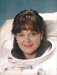

Lyndon B. Johnson Space Center
Houston, Texas 77058
|
National Aeronautics and Space Administration Lyndon B. Johnson Space Center Houston, Texas 77058 |
 |
Biographical Data |
||
Tamara E. "Tammy" Jernigan (Ph.D.)
NASA Astronaut (former)
PERSONAL DATA: Born May 7, 1959, in Chattanooga, Tennessee. Married to Peter J.K. "Jeff" Wisoff. She enjoys volleyball, racquetball, softball, and flying. As an undergraduate, she competed in intercollegiate athletics on Stanford’s varsity volleyball team. Her father, Mr. Terry L. Jernigan, resides in Chattanooga, Tennessee. Her mother, Mrs. Mary P. Jernigan, resides in Hesperia, California.
EDUCATION: Graduated from Santa Fe High School, Santa Fe Springs, California, in 1977; received a bachelor of science degree in physics (with honors), and a master of science degree in engineering science from Stanford University in 1981 and 1983, a master of science degree in astronomy from the University of California-Berkeley in 1985, and a doctorate in space physics and astronomy from Rice University in 1988.
ORGANIZATIONS: Member of the American Astronomical Association, the American Physical Society, the United States Volleyball Association, and a Lifetime Member of Girl Scouts.
AWARDS: Distinguished Service Medal (2000, 1997); Lowell Thomas Award, Explorer’s Club (2000); Group Achievement Award – EVA Development Test Team (1997); Fédération Aéronautique Internationale Vladimir Komorov Diploma (1997, 1996); Outstanding Leadership Medal (1996); Outstanding Performance Award (1993); Exceptional Service Medal (1993); Laurels Award, Aviation Week (1991); NASA Space Flight Medal (2000, 1996, 1995, 1992, 1991).
EXPERIENCE: After graduating from Stanford University, Jernigan served as a research scientist in the Theoretical Studies Branch at NASA Ames Research Center from June 1981 until July 1985. Her research interests have included the study of bipolar outflows in regions of star formation, gamma ray bursters, and shock wave phenomena in the interstellar medium.
NASA EXPERIENCE: Selected as an astronaut candidate by NASA in June 1985, Dr. Jernigan became an astronaut in July 1986. Her assignments since then have included: software verification in the Shuttle Avionics Integration Laboratory (SAIL); operations coordination on secondary payloads; spacecraft communicator (CAPCOM) in Mission Control for STS-30, STS-28, STS-34, STS-33, and STS-32; lead astronaut for flight software development; Chief of the Astronaut Office Mission Development Branch; Deputy Chief of the Astronaut Office. Prior to STS-96 she served as the Assistant for Station to the Chief of the Astronaut Office, directing crew involvement in the development and operation of the Station. A veteran of five space flights, Dr. Jernigan has logged over 1,512 hours in space, including an EVA totaling 7 hours and 55 minutes. She was a mission specialist on STS-40 (June 5-14, 1991) and STS-52 (October 22-November 1, 1992), was the payload commander on STS-67 (March 2-18, 1995), and again served as a mission specialist on STS-80 (November 19 to December 7, 1996) and STS-96 (May 27 to June 6, 1999). Currently, Dr. Jernigan serves as the Lead Astronaut for Space Station external maintenance. She also formulates and advocates Astronaut Office EVA input into the design, maintenance, and operation of research and systems modules built by our Italian partners.
Dr. Jernigan retired from NASA in September 2001 to accept a position at Lawrence Livermore National Laboratory where she serves as Assistant Associate Director for Physics and Advanced Technologies.
SPACE FLIGHT EXPERIENCE: STS-40 Spacelab Life Sciences (SLS-1) was a dedicated space and life sciences mission aboard Space Shuttle Columbia. During the nine-day flight crew members performed experiments which explored how humans, animals and cells respond to microgravity and readapt to Earth’s gravity on return. Other payloads included experiments designed to investigate materials science, plant biology and cosmic radiation. Mission duration was 218 hours, 14 minutes, 20 seconds. Landing was at Edwards Air Force Base, California.
STS-52 was also launched aboard Space Shuttle Columbia. During the ten-day flight, the crew deployed the Italian Laser Geodynamic Satellite (LAGEOS) which will be used to measure movement of the Earth’s crust, and operated the U.S. Microgravity Payload 1 (USMP-1). Also, the Space Vision System (SVS), developed by the Canadian Space Agency, was tested by the crew using a small target assembly which was released from the remote manipulator system. The SVS will be used for Space Station construction. In addition, numerous other experiments were performed by the crew encompassing the areas of geophysics, materials science, biological research and applied research for Space Station. Mission duration was 236 hours, 56 minutes 13 seconds. Landing was at Kennedy Space Center, Florida.
STS-67 Astro-2 mission aboard the Space Shuttle Endeavour was the second flight of the Astro observatory, a unique complement of three telescopes. During this record-setting 16-day mission, the crew conducted observations around the clock to study the far ultraviolet spectra of faint astronomical objects and the polarization of ultraviolet light coming from hot stars and distant galaxies. Mission duration was 399 hours and 9 minutes. Landing was at Edwards Air Force Base in California.
On STS-80 the crew aboard Space Shuttle Columbia successfully deployed and retrieved the Wake Shield Facility (WSF) and the Orbiting Retrievable Far and Extreme Ultraviolet Spectrometer (ORFEUS) satellites. The free-flying WSF created a super vacuum in its wake and grew thin film wafers for use in semiconductors and other high-tech electrical components. The ORFEUS instruments, mounted on the reusable Shuttle Pallet Satellite, studied the origin and makeup of stars. Her two planned spacewalks were lost due to a jammed outer hatch on the airlock. Mission duration was a record breaking 423 hours, 53 minutes.
STS-96 Discovery (May 27 to June 6, 1999) was a 10-day mission during which the crew performed the first docking to the International Space Station, and delivered 4 tons of logistics and supplies in preparation for the arrival of the first crew to live on the station early next year. The mission was accomplished in 153 Earth orbits, traveling 4 million miles in 235 hours and 13 minutes, during which Dr. Jernigan performed an EVA of 7 hours and 55 minute duration.
NOVEMBER 2001
This is the only version available from NASA. Updates must be sought direct from the above named individual.
{kind=link}